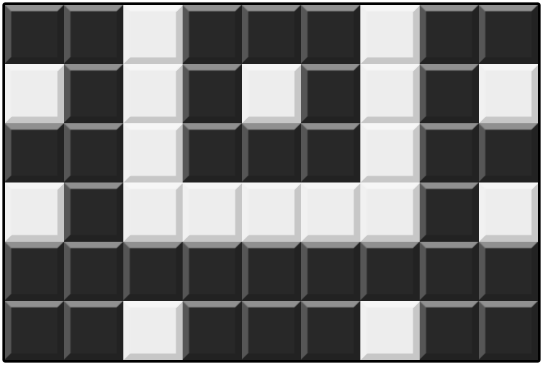
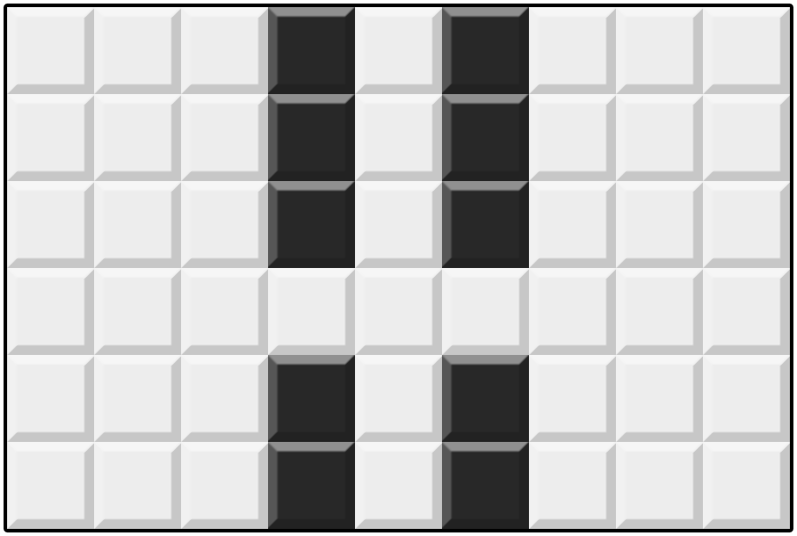
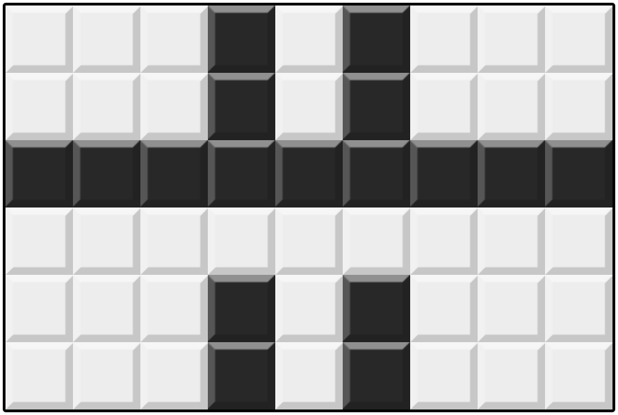
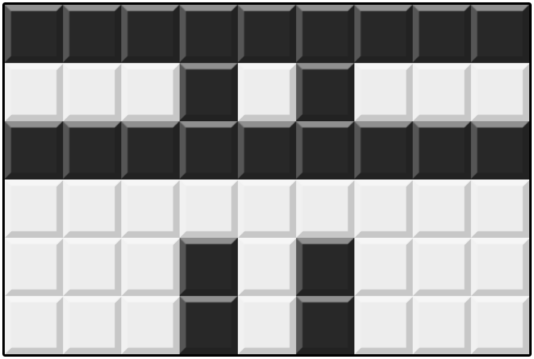

Bu Dengklek has a mosaic in the form of $N \times M$ grid, where every square is either white or black. The rows are numbered from $1$ to $N$ from top to bottom; the columns are numbered from $1$ to $M$ from left to right. Let $(i, j)$ denote the square at row $i$ and column $j$. In the beginning, all squares are white.
In one operation, Bu Dengklek can perform one of the following actions:
Bu Dengklek has a mosaic plan that is represented by a matrix $S$ of size $N \times M$, where each element is either the character . or the character #.
., then Bu Dengklek wants square $(i, j)$ to be white in the end.#, then Bu Dengklek wants square $(i, j)$ to be black in the end.It is guaranteed that Bu Dengklek's mosaic plan can be achieved using only the operations above.
Bu Dengklek wants to perform no more than $200\,000$ operations to produce a mosaic that is as close as possible to her plan. Help Bu Dengklek find the sequence of operations that maximizes the number of squares that are colored according to her plan!
. or #.This is an "output-only" problem. For each test case, you write the output to a file.
The input files for this problem can be downloaded in the attachment section at the end of this problem.
Inside the .zip file, there are $5$ input files to solve: mosaik_1.in, mosaik_2.in, mosaik_3.in, mosaik_4.in, and mosaik_5.in.
For each input file that you solve (you don't have to solve all input files), create an output file mosaik_T.out, where T is the test case number.
Then, compress all output files into a single .zip file, then submit.
The input is given with the following format:
N M S1,1S1,2…S1,N S2,1S2,2…S2,M ⋮ ⋱ ⋮ SN,1SN,2…SN,M
On the first line, output an integer $Z$ ($0 \leq Z \leq 200\,000$) representing the number of operations performed.
Then, output $Z$ lines, where the $k$-th line represents the $k$-th operation. Each line consists of three sections separated by a space:
BARIS (Indonesian word for "row") or KOLOM (Indonesian word for "column") representing whether the operation is performed on a row or a column respectively.. or # representing the operation's color, where . represents white and # represents black.Your output will receive a score on a test case if your output follows the output format and satisfies the constraints.
For a test case, after all operations are performed, let $c$ denote the number of squares with the same color as planned. Then, your score for that test case is $\left(\frac{c}{N \times M}\right)^3 \times 20$. Your final score is the sum of the scores of all test cases, which is then rounded down.
If a test receives a score, you can see its detailed scoring in the submission page. You can also see the number of squares that are colored as planned for that test case.
6 9 ##.###.## .#.#.#.#. ##.###.## .#.....#. ######### ##.###.##
5 KOLOM 4 # KOLOM 6 # BARIS 4 . BARIS 3 # BARIS 1 #
The following is Bu Dengklek's mosaic plan:

The sequence of operations above will transform the mosaic as follows:





The following squares are the squares that are colored as planned:

Therefore, the score of this test case is $\left(\frac{34}{6 \times 9}\right)^3 \times 20 \approx 4.992$.
The input files for this problem can be downloaded here.